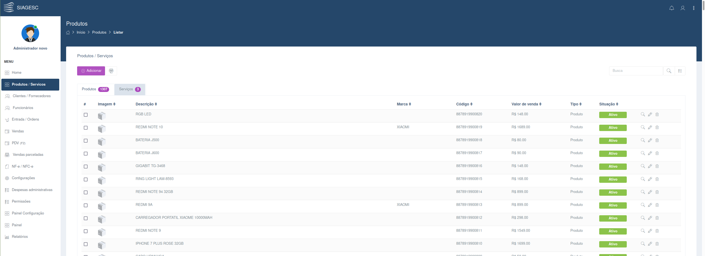
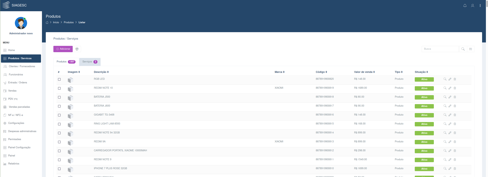

SIAGESC (Sistemas de Apoio à Gestão Comercial)
-
 

Sistema de Apoio à Gestão Comercial é um pequeno ERP que tem a missão de facilitar nas atividades do pequeno empreendedor, fazendo com que todos os processos de seu negócio sejam controlados e organizados em um único sistema, totalmente online.
www.siagesc.com.br
O sistema possui emissão de NF-e e NFC-e, PDV, controle de vendas e parcelas, controle de estoque, entrada por XML, controle de comissão por funcionário, relatórios, controle de clientes e despesas administrativas.
A software foi construído com as tecnologias: Angular na versão 8, Laravel em sua versão 5.6, banco de dados Mysql, Cloud AWS